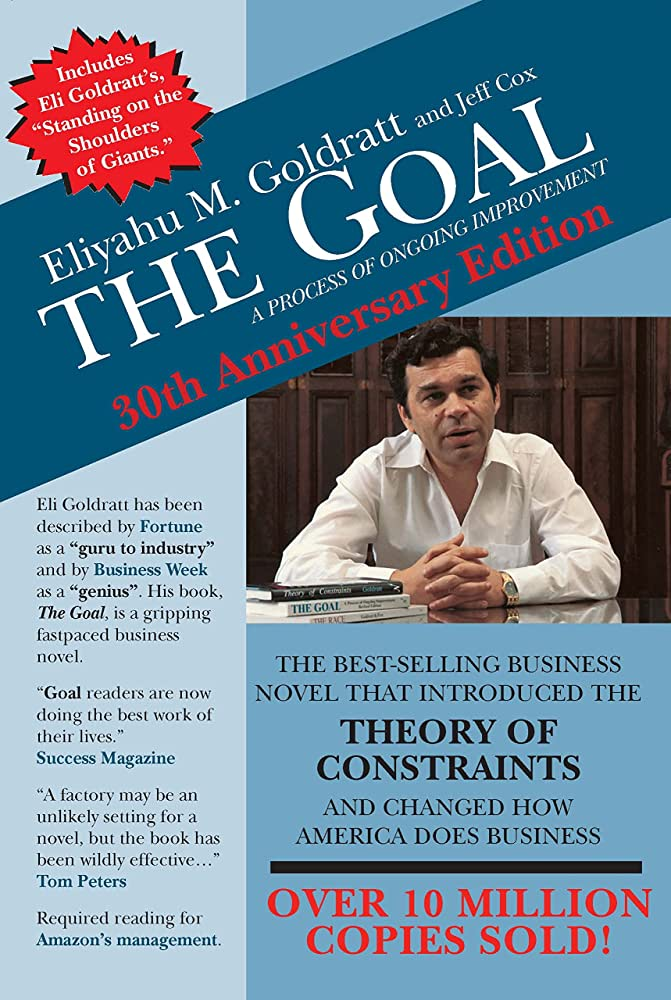
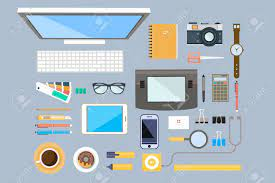
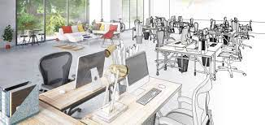
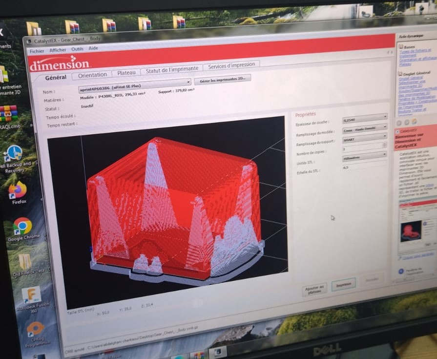
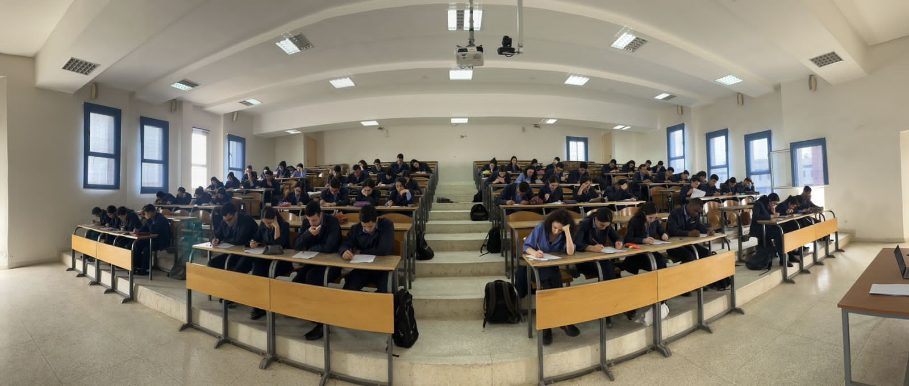
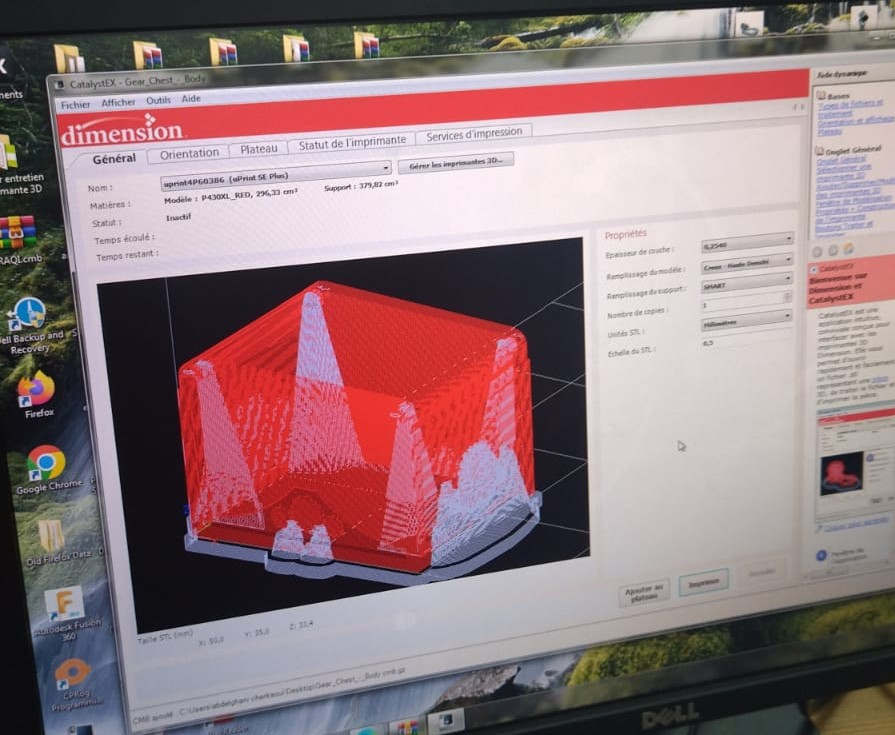
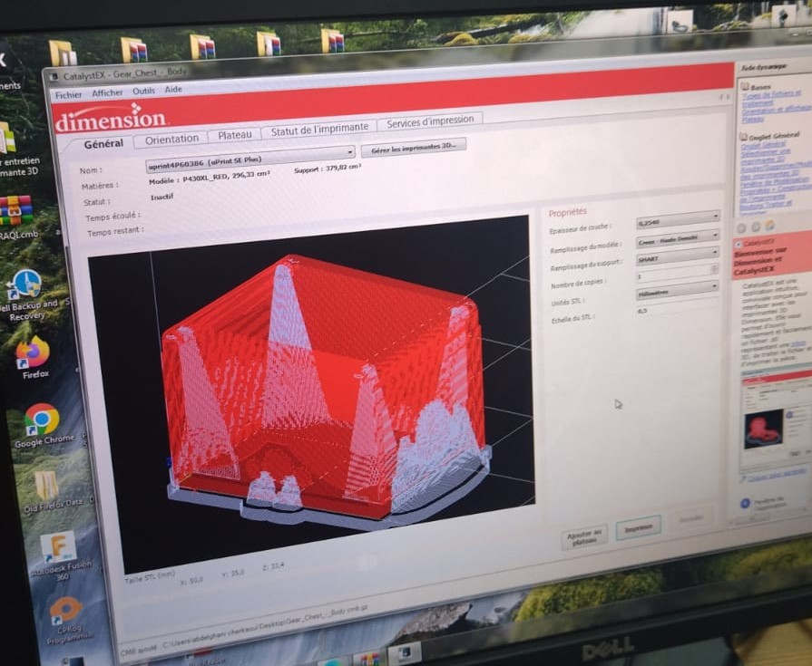

Je suis étudiant en génie industriel passionné et déterminé, actuellement en deuxième année à l'EMI (École Mohammadia d'Ingénieurs).
Mon parcours académique m'a permis d'acquérir une solide base en génie industriel, en me familiarisant avec les concepts fondamentaux de la production, de la gestion des opérations et de l'optimisation des processus. Cependant, conscient des évolutions constantes dans le domaine de l'industrie, je suis particulièrement attiré par le concept d'Industrie 5.0 et les avancées de la robotique.
L'Industrie 5.0 représente une nouvelle ère de l'industrie, où l'automatisation intelligente et l'interaction homme-machine sont au cœur des processus de production. Cela ouvre des opportunités excitantes pour repenser la manière dont les usines fonctionnent, en combinant les capacités des robots avec l'intelligence humaine.
Je suis convaincu que la robotique jouera un rôle de plus en plus crucial dans l'industrie, offrant des solutions innovantes pour améliorer la productivité, la qualité et la flexibilité des processus. Je suis motivé à approfondir mes connaissances dans ce domaine, à explorer les technologies de pointe telles que la vision par ordinateur, l'apprentissage automatique et la robotique collaborative
Après avoir lu le livre "The goal", mes collègues et moi avons présenté une pièce théâtrale en illustrant la fameuse théorie des contraintes. Plus précisemment, nous avons simulé un lieu de travail où il y a des employés des chef d'ateliers le directeur...en créant un poste goulot au niveau d'un poste de travail puis essayant d'en remédier par plusieurs tentatives mettant en valeur la productivité et le bien être des ouvriers.
Nous avons décortiquer le text book "Andris Freivalds, Benjamin Niebel - Niebel’s Methods, Standards, & Work Design-McGraw-Hill Education ( 2013)"
en s'intéressant juste au chapitres 5,6 et 7 pour les résumer dans des pecha kucha impressionantes.
-->Pour la petite information, pecha kucha est une présentation de 20 slides pour une durrée de 20s chacun.
Le chapitre 5 intitulé "Workplace,Equipment,and Tool Design"
L'ergonomie implique la conception adaptée du lieu de travail, des outils, de l'équipement et de l'environnement de travail en fonction de l'opérateur humain. Plutôt que de se concentrer sur la théorie détaillée de la physiologie humaine, ce chapitre présente les principes de conception du travail et des listes de contrôle appropriées. L'objectif est d'aider l'analyste des méthodes à concevoir le lieu de travail, l'équipement et les outils de manière à accroître la production et l'efficacité tout en réduisant les blessures chez les opérateurs humains

Le chapitre 6 intitulé "Work Environment Design"
Assurer de bonnes conditions de travail pour les opérateurs est une priorité absolue pour les analystes des méthodes. Les usines qui accordent une réelle importance à cet aspect essentiel connaissent une véritable réussite par rapport à celles qui le négligent. En effet, investir dans un environnement de travail amélioré génère généralement des retombées économiques significatives. Au-delà d'une augmentation de la productivité, ces conditions de travail idéales se traduisent par une meilleure sécurité, une réduction de l'absentéisme et des retards, une plus faible rotation du personnel, une augmentation du moral des employés et une amélioration des relations avec le public. Pour obtenir plus de détails sur les normes acceptables en matière de conditions de travail et les mesures de contrôle recommandées pour résoudre les problèmes spécifiques, ce chapitre offre une exploration approfondie. Vous y découvrirez des stratégies pour créer un environnement de travail exceptionnel qui fait toute la différence à tous les niveaux.

Le chapitre 7 intitulé "Design of Cognitive Work"
Ce chapitre traite de l'adaptation de la conception des méthodes de travail aux évolutions actuelles des emplois et des environnements professionnels. Avec des machines de plus en plus complexes, les opérateurs doivent traiter rapidement de grandes quantités d'informations, prendre des décisions critiques et assurer un contrôle efficace. L'importance croissante de l'information et de la prise de décision, notamment grâce à l'utilisation des ordinateurs et des technologies modernes, est mise en évidence. Le chapitre explore les bases de la théorie de l'information, propose un modèle conceptuel simplifié de l'humain en tant que processeur d'informations, et présente les meilleures méthodes pour coder et afficher les informations de manière optimale, en se concentrant sur les affichages auditifs et visuels. En outre, il examine les considérations essentielles relatives à l'interaction homme-ordinateur, en abordant les aspects logiciels et matériels
La production industrielle n'est pas restreinte au conventionnel, la fabrication additive connue sous le nom de "l'impression 3D" est désormais très répandue dans plusieurs domaines comme l'industrie, la médecine...Au sein du labo nous avons eu la chance de fabriquer des pièces de notre choix après avoir les transmettre vers le logiciel CatalystEX. Egalement, nous avons pu voir du près le fonctionnement de la machine Stratasys uprint SE plus à partir de l'introduction de la matière et létablissement de la connection avec le logiciel CatalystEX, en passant par le processus de slicing puis l'obtention des pièces avec la matière support à enlever.

Dans le labo, nous avons manipuler des appareils différents en étudiant leur fonctionnement et utilisation pour répondre au besoin donné. Là je prend par exemple un appareil de mesure de force musculaire: Digit Force Gauge
J'ai suivi avec enthousiasme le cours sur le Design Thinking sur OpenClassrooms, qui m'a offert une expérience d'apprentissage précieuse en tant qu'étudiant en génie industriel. La plateforme OpenClassrooms s'est avérée conviviale et intuitive, facilitant la navigation et l'accès aux ressources. Le cours lui-même était bien conçu, présentant clairement les concepts clés du Design Thinking et illustrant leur application dans l'industrie. J'ai acquis des connaissances approfondies sur le processus de conception centré sur l'humain, la génération d'idées créatives, les prototypes et les tests. Cette formation m'a permis d'adopter une approche plus holistique dans ma réflexion sur la conception des processus industriels, en intégrant la créativité, la collaboration et la résolution de problèmes.
Au cours de cette pésentation réalisé par le docteur mécanique Mr. Mouhamed HAKIM, nous avons assimilé que l'ingénierie inverse en gros part de produit vers l'établissement du concept derière son fonctionnement. En outre nous avons assisté à une démonstration en classe menée par M.Mouhamed en scannant une pièce par un instrument(scanner) connecté au PC où est installé un logiciel de CAO nommé VXelement, à l'aide duquel on n'a pu faire la conception de la pièce scannée tout en signalant quelleques dificultés au niveau de la finission qui peut être automatique ou parfois manuelle.
Nous avons l'honneur d'assister à cette conférence animée par Mr. Marouane BOUJMAA, consultant international et manager de transition - Maître Black Belt certifié en Lean Six Sigma. On a fixé la notion de l'idustrie 5.0 définie par l'industrie 4.0 en plus du facteur humain à souligner son importance de l'humain dans le trio magique pour la réussite certaine à savoir: le système opérationnel + la structure managériale + L'etat d'esprit. En outre, nous avons pratiqué l'approche Belbin qui a pour objectif la constitution d'une équipe riche et polyvalente en collaborant entre des profils différents après avoir les déterminer en posant des questions typiques aux membres pour en fin de compte les classifier en trois grandes catégories à savoir: Reflexion, Action et Relation.
En passant l'examen sur le design, c'était un QCM riche et long qui a englobé des questions sur l'ingénierie, l'ingénierie industrielle, l'ingénierie de design, le design thinking ...

En passant l'examen sur la robotique,en fait c'était une autre version nouvelle d'évaluation qui est formative et qui a duré 4h tout en étudiant principalement la cinématique directe et inverse d'un robot dit EMICC. J'ai apprécié cette sorte d'examen en binôme sous l'encadrement du professeur surtout en matière de la robotique.
L'événement THEMA 2022, organisé par l'EMG - L'Ecole Marocaine d'Ingénierie, s'est tenu les 23 et 24 février 2022. L'événement a abordé le thème "Les technologies de l'Industrie Smart 4.0 et leurs applications". Au cours de cet événement, notre cher professeur CHERKAOUI Abdelghani, professeur à l'Ecole Mohammadia d'Ingénieurs à Rabat, a donné une présentation sur le thème "Robots et cobots". En suivant cette video j'ai pu capter l'essentiel de la cobotique que je peut résumer comme suit:
- un cobot est un robot collaboratif
- si et seulement si il respecte les normes
- mais la sécurité doit être toujours là
- il existe 4 formes de la collaboration:arrêt de sécurité controlée, guidage manuel, contrôle de la vitesse et de la distence de séparation, limitation de puissance et de la force
- des contacts PFL en deux types: transitoire(action réaction) ou quasi-statique
 
